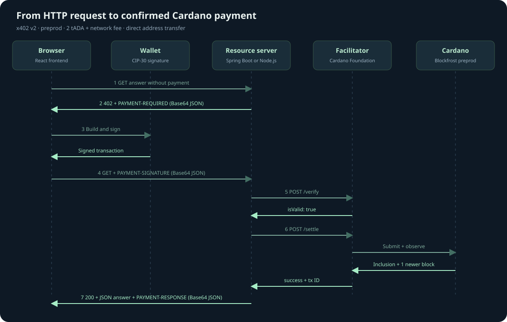

Cardano x402 from request to paid answer
This tutorial demonstrates a complete HTTP payment handshake using test ADA on Cardano preprod. You will run a facilitator, a Spring Boot resource server, and a separate React frontend, then inspect a 402 quote and approve a payment in a CIP-30 wallet. The resource is a short local educational answer costing 2 tADA plus the network fee.

What each application does
The frontend asks for an answer and shows the protocol messages. CF Connect with Wallet discovers browser wallets and manages the connection. Evolution builds a Cardano transaction and asks the CIP-30 wallet to sign it. The official x402 Cardano client turns that result into a payment payload; the official core library encodes it as an HTTP header.
The resource server owns the price and receiving address. It issues the HTTP 402 challenge, compares the returned payment to its stored terms, and calls the facilitator. It releases the answer only after sufficient settlement evidence. It stores each question and its payment in PostgreSQL so a transaction cannot purchase a different question on retry.
The facilitator verifies the signed payment, broadcasts it, and checks the chain through Blockfrost. It holds no signing keys. The payer wallet supplies both the resource price and network fee. These roles follow the CF facilitator API and official Cardano x402 mechanism.
Prepare your environment
- Start Docker Desktop. The CF facilitator uses Linux AMD64 because its pinned native Aiken binding requires that platform. On Apple Silicon, Docker runs that container through emulation.
- Run
./scripts/setup.sh. It installs locked frontend dependencies, imports the preprod key from~/keyswhen needed, and generates a merchant wallet ifPAY_TOis empty. The merchant recovery phrase stays in.local/merchant.jsonwith restricted permissions. - Run
./scripts/start.sh. The initial build downloads dependencies and runs server tests plus the facilitator's native derivation checks. - Run
./scripts/check.shafter startup. It checks live facilitator readiness, the chain proxy, the 402 header, frontend routing, and malformed-payment rejection without spending funds. - Open
http://localhost:5174in the browser with your wallet extension installed.
Install a CIP-30 wallet from its official source, select preprod in its settings, and obtain test ADA from the official faucet. The merchant and facilitator do not need starting funds. A wallet with at least 3 tADA can pay this demo price and fee, subject to the wallet's UTxO layout.
CIP-30 reports network ID 0 for both preview and preprod. The frontend can reject mainnet, but it cannot distinguish those two testnets from that value alone. Select preprod explicitly. The builder and facilitator use preprod data.
Step 1 Ask without payment
Enter a question such as “What is a UTxO?” and press Ask and see the 402 quote. The frontend first creates a question record with POST /api/quotes. That free setup endpoint returns a unique resource URL. It then requests that URL without a payment:
GET /api/answers/{quoteId}The server responds with HTTP 402 Payment Required, a PAYMENT-REQUIRED header, and the same JSON in the response body. The header is base64-encoded JSON, not encryption. The trace panel decodes it for inspection.
{
"x402Version": 2,
"resource": {
"url": "http://localhost:8081/api/answers/{quoteId}",
"description": "A short educational Cardano answer",
"mimeType": "application/json"
},
"accepts": [{
"scheme": "exact",
"network": "cardano:preprod",
"asset": "lovelace",
"amount": "2000000",
"payTo": "addr_test1...",
"maxTimeoutSeconds": 600,
"extra": {
"assetTransferMethod": "default",
"areFeesSponsored": false,
"confirmationPolicy": { "l1Confirmations": 1 }
}
}]
}An ADA is 1,000,000 lovelace. The price is therefore 2 test ADA, expressed as an integer string. The default transfer method sends value directly to the merchant address. The quote expires after 10 minutes; the UI shows a countdown and offers Request a fresh quote in the final 30 seconds. The transaction's validity window is capped to finish before the quote expires.
Step 2 Connect and approve in the wallet
Connect one of the installed wallets. The wallet permission prompt permits the site to read account information and request signatures. It does not transfer funds.
Press Approve 2 tADA in wallet. The browser checks the quote against its configured price, recipient, resource URL, network, and confirmation policy. The Evolution adapter builds a transaction with a merchant output, a network fee, and change back to the payer.
Review the receiving address, test ADA amount, change, and fee in your wallet, then approve the signature. The chosen UTxO is included in the transaction inputs and recorded as the nonce previousTxHash#outputIndex. This provides an on-chain replay anchor. The browser never calls submitTx; the signed transaction is still unbroadcast at this step.
The adapter implements ClientCardanoSigner because the SDK's reference signer uses a mnemonic, while this demo signs through a browser wallet. The official ExactCardanoScheme constructs the Cardano payload, and encodePaymentSignatureHeader from @x402/core/http creates the header.
Step 3 Retry with the signed payment
The frontend saves the signed payload in this tab's session storage before sending it. It repeats the same request with a PAYMENT-SIGNATURE header:
GET /api/answers/{quoteId}
PAYMENT-SIGNATURE: <base64 x402 v2 payment payload>The decoded payload contains x402Version, resource, accepted, and payload. Cardano's inner payload contains the signed transaction as base64 CBOR and the nonce. The resource server requires the accepted terms to match its stored quote and the resource URL to identify that question.
Spring Boot calls POST /verify on the facilitator. HTTP 200 from verify is not enough: the server checks isValid: true. On rejection, it returns 402 and never calls settlement. On acceptance, it computes the Cardano transaction ID from the original transaction body and binds that ID to the question in PostgreSQL before submission.
Step 4 Submit and observe settlement
Spring Boot calls POST /settle using the verified payload and the original terms. The facilitator validates, submits once, and waits for chain evidence. Its PostgreSQL journal lets it reconcile a retry after a restart or lost HTTP response.
This demo uses l1Confirmations: 1: the payment must appear in a canonical block and at least one newer block must follow. Mempool acceptance is insufficient. Confirmation time varies; the facilitator waits up to 75 seconds per call, while the server gives that call 90 seconds.
If evidence is still pending, the resource server returns HTTP 202, a PAYMENT-RESPONSE header, and the transaction ID. Press Check the same payment again after a short wait. A network timeout may also happen after submission, so keep the original signed payment even if you have not received a transaction ID.
Do not sign a second transaction for the same question after a payment may have been submitted. The retry reconciles the existing payment without another signature or another broadcast. Refreshing the same tab restores the saved payment. Closing the tab removes that browser copy; the server still retains the payment journal.
If a wallet approval takes longer than the quote lifetime, the server can return 410 quote_expired before accepting that payment. For an unbound quote it also returns paymentStatus: not_submitted and canRequestNewQuote: true. Only this explicit pre-submission rejection, or a verification rejection with the same guarantee, lets the frontend discard the saved signature and offer Request a fresh quote. Expiration does not stop reconciliation of an already accepted payment. Pending responses and network failures retain the signature.
Step 5 Read the answer and receipt
After sufficient chain evidence, the server returns HTTP 200, the answer, and PAYMENT-RESPONSE containing the settlement receipt. The frontend displays the answer and a preprod transaction explorer link. Open the link to inspect the merchant output and fee independently.
Retrying this same question with the same payment returns its saved answer. Reusing that transaction for a different question returns 409 Conflict, enforced by a unique Cardano transaction ID in the resource database. Transaction submission idempotency alone does not provide this resource-level binding.
Inspect the implementation
| File | Responsibility |
|---|---|
frontend/src/payment.ts | Offer checks, Evolution CIP-30 signer, official x402 payload and header |
frontend/src/App.tsx | Wallet connection, quote, trace, signing, and retry UI |
resource-server/src/main/java/demo/x402/PaidAnswers.java | Quote persistence, v2 handshake, payment ownership, answer release |
resource-server/src/main/java/demo/x402/FacilitatorClient.java | Facilitator supported, verify, and settle HTTP calls |
resource-server/src/main/java/demo/x402/BlockfrostProxy.java | Restricted chain reads with the private Blockfrost key |
compose.yaml | Separate applications and durable PostgreSQL volume |
The official Java x402 library still documents a v1 filter using X-PAYMENT and a different requirements shape. This example implements a small v2 transport adapter in Spring Boot; it does not claim to use that v1 filter. See the official Java README.
Common issues
| Symptom | Action |
|---|---|
| No wallet appears | Open the page in the browser where the CIP-30 extension is installed, then reload. |
| Wrong network or unavailable inputs | Select preprod explicitly; preview also reports CIP-30 network ID 0. |
| No spendable UTxOs or insufficient funds | Fund the payer with preprod test ADA and wait for wallet and Blockfrost indexing. |
| Expired quote before signing | Press Request a fresh quote. |
| Expired quote after a slow wallet approval | Retry the saved payment; when the server confirms it was not submitted, press Request a fresh quote. |
| Pending or lost response after signing | Retry the same saved payment. Do not request another signature. |
| Backend unavailable | Check docker compose logs --tail=100 facilitator resource-server and facilitator readiness. |
| Chain authorization failure | Set a valid preprod Blockfrost token in .env and recreate the services. |
Run ./scripts/test.sh for the automated checks. Run ./scripts/check.sh for the live no-spend smoke test. See validation evidence for what was actually exercised and what still requires a funded wallet.